Goodbye wave for Claustrophobopolis?
It seems that even some of the top QuakeWorld players are finally getting really sick of 1on1 matches on DM2. We know there are always some people who get orgasms while watching LocKtar or griffin doing their thing on DM2 but in real 1v1 competition this map really has had its best days. The possibility of extremely defensive play on DM2 makes the map just bad and uninteresting for the players and even for the spectators. We have been able to see perfect examples of DM2’s defensive games just recently in the Ownage 1v1 tournament. Some people may have found those games exciting but I think the majority feels like they were just boring, CS’ish and bad.
Last night Gamer gave away his point of view on this particular topic by saying the following after his match vs. Seese:
“I really don’t understand why this map is still being played in tournaments. Its fun for prac games but there is something wrong in a map where the first fragger is highly likely to win. There was this fight where both of us died, I spawned rl pack and Seese spawned near me. gg? After that it was sauna time. He tried to kill me but I just ran and ran… not very boring for me but boring for spectators I guess :). Just get rid of the map in the next league, there are many good custom maps like rf2 and skull.”
And Gamer is not the only one who feels this way about DM2. Locust, who is recently better known for uninstalling quake after losing against rock, also left a comment to Gamer’s match report saying that he completely, agrees with Gamer’s comment.
So if the miracle happens and the 1v1 league admins will have balls to remove DM2, what will happen? Most likely there is couple of way too old fashioned people who feel like the league admins have ruined whole QuakeWorld and therefore they quickly uninstall and quit. Then there’s the group of people who will celebrate the fact that DM2 is finally out of the way. But that’s not all, there’s one more group of people, which consists of players who are still very interested in QuakeWorld and willing to make it popular. These guys are the first ones to realise that if DM2 goes out, something new has to come in to take its legendary place but what the hell could that be? The map that wants to replace DM2 has to have that something unique, creative and fun that inspires players to learn and play it.
Unfortunately there doesn’t seem to be many active and skilled QuakeWorld mapmakers around anymore so the map has to be something that’s already made. So, what we, the community got to offer? I’m about to show you couple of maps that I think may have what it takes to replace the oh so lovely DM2.
Skull – Skull hunt (download)
Not exactly a stranger to some people, especially for the players who participated in the Custom Map Duel Tournaments couple of years back in time. Skull is unique map and you can often find yourself in weird situations and fights, which makes the playing experience fresh and interesting. The map also has possibilities for various trick jumps to fool your opponent or gain access to other rooms very quickly. But it’s not the amount of trick jumps that make map good, it’s how the item layout, rooms and connection between the rooms all work together. Skull has various differently levels on which YA and MH lies at the bottom and RA at the top, with quick route to lower level.
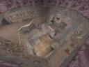
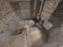
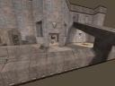
Out of all DM2 replacing candidates, skull is surely one of the strongest. If you are wondering what is this all hype about do yourself a favour and browse to Challenge-TV’s website and search for skull demos. Mortuary, Gamer, rat and Milton are few names to look for when you want to see top-notch actions on skull.
Rf2 – Rusted Factory 2 (download)
Just like skull rf2 was used in the CMDT as well while it was still being in beta state. Rf2 reminds people of DM4, which isn’t surprising as the item layout is pretty same and getting spawn frags isn’t much harder. Rf2 offers a lot of action from vertical fighting to shaft battles, teleport dancing and crucial moments at the Red Armor. The good thing about rf2 is that there aren’t any boxy rooms with one entrance unlike on DM4 and that keeps the gameplay alive. The players whom shine on DM4 will most likely shine on rf2 as well but the defensive a.k.a CS players will face a problem that you can no longer camp safely at MH. Rf2 has balanced layout for armors and weapons and it has the feeling of playing fixed DM4. CMDT produced various good demos on this specific map and CH-TV is of course the place to find them.
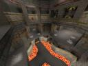
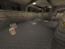
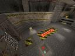
Vdm3 – Zaku’s favourite map (download)
I personally just found out this map this week and I was really impressed how different it looks and plays. As it seemed so odd after first sight I thought it’s better to download some demo and see how it is meant to be played. Challenge-TV didn’t have much to offer this time but I was still able to download a demo where the map creator vio was playing against phrenic. After seeing the demo I went on public server just to jump around on the map but it didn’t take long until I was joined by ToT_error, who is of course a lot better player than me. I asked how many times he had played on this map and he said about 10 times. I just wanted to try the map so I hit the ready bind and tried my best. On first try I got beated pretty badly but on second try I got good start but it wasn’t quite enough but the game was definitely closer which proves the fact that lesser skilled people do really have better chances vs. the experienced on new maps.
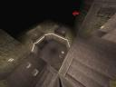
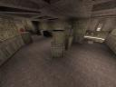
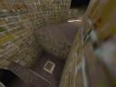
The map itself is quite small and in my opinion RA and YA are located too close to each other. A clever player knows how to abuse this by controlling the map at the top level of YA room. Good control of RA-YA leaves the down player very thin chances of gaining control because the down player is often left with only GA and RL/GL. Well timed, sneaky or rocket jump boosted attacks are the way to go but it’s easier said than to be done.
Slip – Slipstream (download)
Slip is a map that the American QuakeWorld community accepted to GGL’s 1on1 tournament but here in the Europe we barely see this map at all. Like vdm3, slip also has the problem that two major items are just seconds away from each other but on slip I would say it’s worse as these two major items are RA and MH. Player only needs RL, couple of seconds and he will be fully stacked. Of course we got clever players in the community and this is one of the maps on which you need some brain to over come the stacked player. With well-timed attacks from top level of map are one of the moves to consider but all this of course depends on the game, as all of them are a bit different. Compared to the already reviewed maps in my opinion Slip has the worst chances of making to the map pool, mainly because I feel like the item layout is not balanced but the some of the rooms are interesting to fight at, especially extremely vertical room in the middle of map.
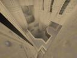
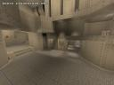
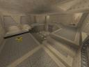
Of course there is hundreds and hundreds of other custom deathmatch maps for QuakeWorld but I felt like one of these four maps might have what it takes to replace DM2. Some of you may think where the hell is rwild and my opinion on that is that does it make any sense to try to replace DM2 by another DM2? The decision is in the hands of the community and I really wish people would take more than couple of minutes to check out these maps. I guarantee all of them will give you more action packed matches than DM2 and that is one of the key elements to keep our tournaments interesting.
dm2 is a good map for 1on1, especially tournaments. People that suddenly realize they cant do anything against their opponent, because he uses defensive tactics are just worse and should loose. Duel is not only aim, it's also tactics (whoa?!), so if you like watching +forward games, watch other maps. kthxbai